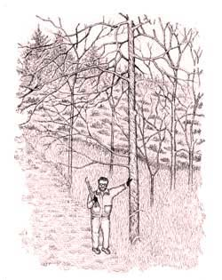

In 1972, I knew nothing about farming; I was just a small businessman from Chicago with no spare time. But, I ended up buying a farm in Richland County, Wis., from a friend, and tried raising cattle on the land, then bees. But these didn’t suit me. So, when the county forester proposed that I start a tree farm, I was ecstatic. Over the next 20 years, I learned by experience the joys - and work - of creating a forest. My ideas of forest management are based on using it as a long-term investment strategy and a way to have fun.
To reduce forest stewardship to its barest essentials, all you need is a piece of land. Let’s say you have a half-acre of land in a part of the country where trees grow. In a matter of a few decades, the land will revert to forest if you leave it alone. But if you have an acre of land, or more, you can speed the forestation process along. And, not much is required: Gather seeds, disturb the earth - dig it, rototill it, plow it - and sow away. You needn’t feel you don’t have the time, the money or the know-how to create a woodland for your own enjoyment. It’s an avocation that suits any schedule, fortune or inclination.
Before you start, think about these “10 Commandments,” things I’ve learned that have made owning a woodland a rewarding experience:
10 Commandments for Owners of Small Woodlands
1. ENJOY YOUR WOODLAND
Your woodland should be a source of pleasure and joy. Sounds, animal activity and interesting vegetation are everywhere. Let nothing interfere with the enjoyment of your forest.
2. BUY LOCAL LAND
One key to enjoying your woodland is buying land that is quick and easy to get to. Buying land nearer to “civilization” also makes good investment sense, because it is more likely to appreciate in value than land located far away from populated areas.
On the other hand, if you live in a sprawling metropolitan area or a part of the country where the landscape is boring, you may decide a longer drive is worth it. Regardless of location, real estate should appreciate roughly on par with alternative investments.
3. DON’T EXPECT TO MAKE MONEY
At least not in the short term. It is unlikely that you’ll see much profit from cultivating trees for hardwood veneers. Sure, a timber sale from sought-after trees, such as walnuts, can bring a windfall, but hardwood trees take about a century to reach maturity. Considered over the long run, your rate of return is much less than you would get from buying a certificate of deposit and there won’t be any regular cash flow. There may be money in practicing short-rotation forestry, such as growing pines for pulp, but this sort of tree farming is not friendly to nature, not nice to look at and not any fun.
If return on your investment is what you’re after, place your hopes in appreciating land values rather then profitable timber sales.
4. DON’T BUY MORE LAND THAN YOU CAN MANAGE
Your pleasure is more likely to come from observing and working your forest than from its size.
5. DON’T EXPEND TOO MUCH TIME, EFFORT or MONEY ON YOUR TREES
Small-scale forestry is a poor business, but personally very enriching. Only do it to the extent that it gives you pleasure while you work the land and walk among your trees.
6. BE KIND TO THE ENVIRONMENT
Doing nothing is one way to be kind to your small woodland. This means do not clear-cut, do not use chemicals and minimize the use of your lawn mower. (You will soon observe that in the country, a tract of land in its natural state is much more interesting and a lot less work than a manicured lawn.) If you want to actively benefit the environment, eliminate nonnative species, encourage trees that provide food and shelter for wildlife, and allow old trees to recycle themselves.
7. CONSULT FORESTRY EXPERTS - BUT REMEMBER WHO’S BOSS
No matter the size of your land, you can improve it with forestry. As a starting point, I suggest you contact a forester through your state’s Department of Natural Resources. Such a professional can provide useful literature, possibly prepare a management plan for your woodland and suggest certain management practices. He or she also can let you know whether your state has any programs benefiting small woodland owners. If you participate in any government subsidies or other programs, you are bound to honor your commitments. Follow foresters’ advice, except when it conflicts with what you want to do, and follow your own instincts.
8. FAVOR MARKETABLE TREES
You may not get rich growing trees for market, but you should still favor trees that are most likely to have timber value in the future. You may either plant tree seeds directly in the soil, or plant seedlings and follow accepted forestry practices to make them marketable. Follow the German Dauerwald philosophy that calls for growing timber in mixed forests of native species, unevenly aged, in a biodiverse environment with abundant wildlife.
9. REPRESS YOUR COMPULSIONS
Often, woodland owners apply their city values to their woodland dealings. They think they have to mow, grind trimmed branches into tiny wood chips and eliminate natural ground vegetation. Remember that nature recycles more efficiently than you do and that the “waste” created by natural vegetation is essential to environmental health.
Another compulsion is to grow trees like row crops. Try to avoid this; trees grow well in a natural environment together with all kinds of other vegetation. A plantation is boring, more work for you and more prone to infestation and disease. If you do plant seedlings, mix the species up as much as you can. They will grow better, foster more wildlife and be more enjoyable.
10. BE A GOOD CITIZEN AND ACTIVIST
Attend conferences of woodland owners’ associations, which many states host (visit www.woodlandowners.org). They offer useful lectures and opportunities for vendors to sell their wares. You will learn a great deal, and you will enjoy meeting others who share your interests. Contact the U.S. Forest Service and your local Extension Service for information about small-woodland forestry. Make your land available as a demonstration site to help educate other, less-experienced woodland owners.
Become politically active. Encourage government to recognize the importance of private woodland owners in preserving our natural environment. Woodland owners play an important role in preserving pure water, preventing floods and maintaining the equilibrium of our climate. The benefits woodland owners get in return - gratification and a wooded haven - can last for generations.
Adapted from Common Sense Forestry, a “Book for Living Wisely from Mother Earth News,” Chelsea Green Publishing.
|
 A bush hog attached to the back of a tractor will mow everything thinner than a man?s wrist. |
A side-by-side like this Gator adds pleasure to working a woodlot. |
A dibble, also called a planting bar or spud, helps make quick-and-easy work of hand-planting trees. |
|
|
|
|